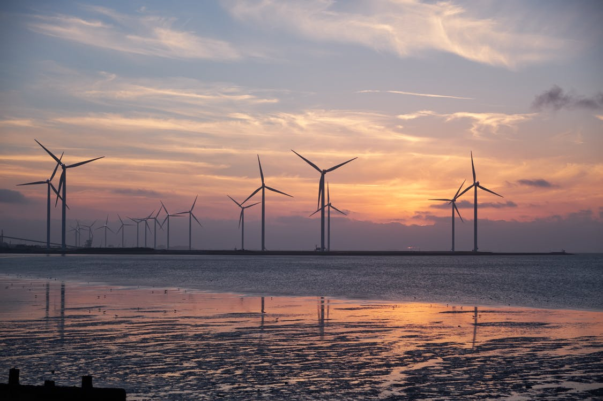
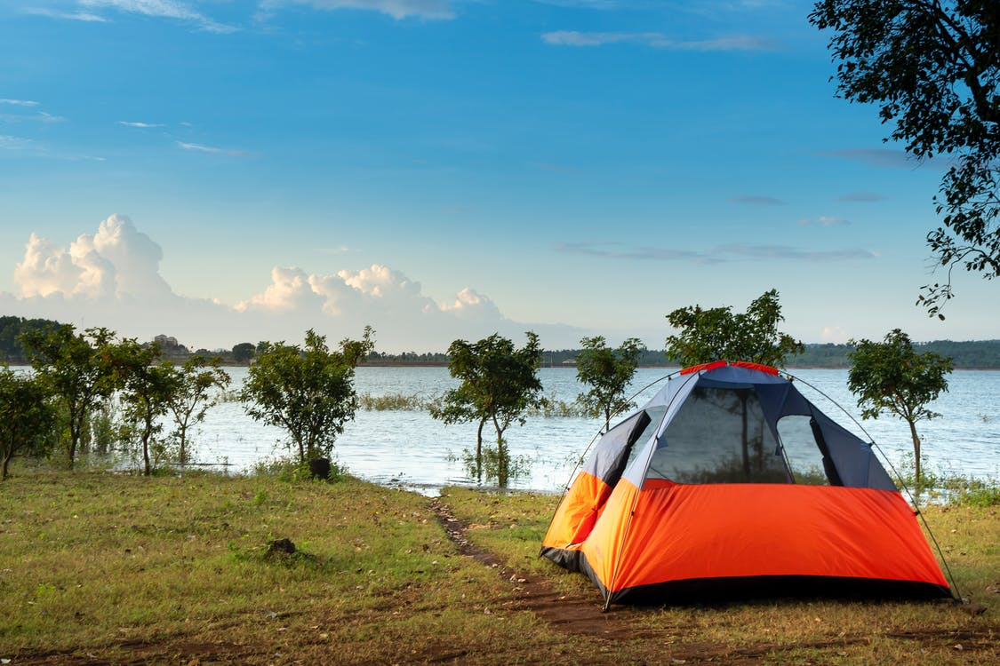

I have passion for the natural environment and am interested in natural resources, especially groundwater. I have experience in environmental sciences, mining and farming. I am currently working towards a Master's in Public Administration at BYU Marriott School of Business, where I am gaining further tools to use in my prospective career in public management and sustainability.
I enjoy spending time at the beach, going camping, spending time with family, playing sports like rugby, and playing board games. Recently my wife and I started exploring other dun activities, and one specific one that we are enjoying is painting with water colors. I don't consider myself an artist, but I have painted some pretty cool pictures
